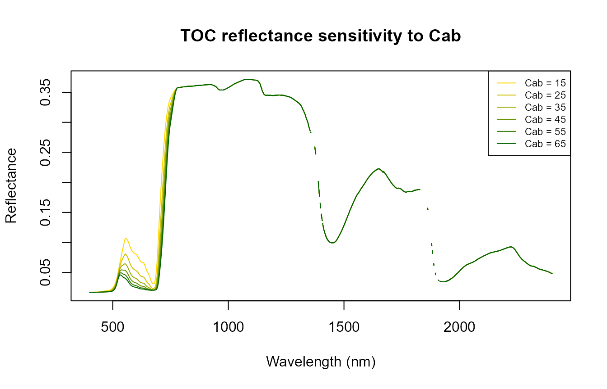
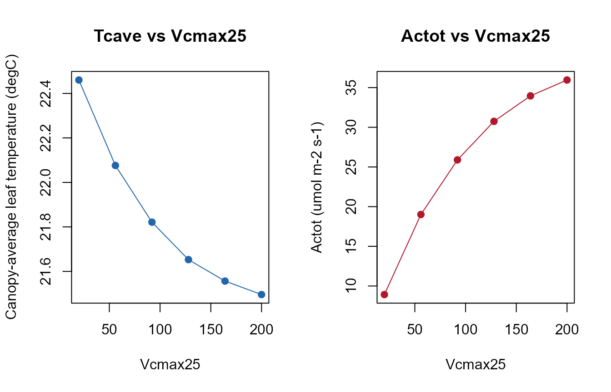
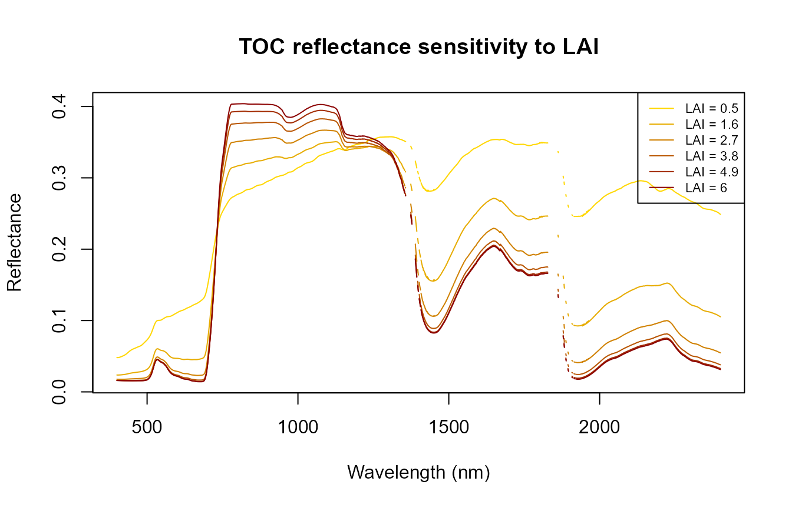

Sensitivity analysis for SCOPE
sensitivity-scope.RmdSCOPE couples radiative transfer, energy balance, and photosynthesis
– so a trait that has no direct radiative-transfer role
(Vcmax25, photosynthetic capacity) can still leave a
signature in reflectance indirectly, through the leaf
temperature the energy balance solves for. This page sweeps one trait at
a time, holding everything else at the bundled example row, and looks at
three different kinds of SCOPE output: reflectance (refl),
canopy temperature (Tcave), and photosynthesis
(Actot).
path_input <- system.file("input", package = "SCOPEinR")
scope_options <- read.table(file.path(path_input, "setoptions.csv"), header = TRUE, sep = ",")
LUT_default <- read.table(file.path(path_input, "LUT_input.csv"), header = TRUE, sep = ",")
run_scope <- function(row) {
get.SCOPE(LUT = row, options.SCOPE = scope_options, optipar = SCOPEinR::optipar2021.Pro.CX,
leaf.model = "fluspect-CX", canopy.model = "fourSAIL",
get.outputs = "ALL", get.plots = FALSE)[[1]]
}1. Sweeping Cab (chlorophyll content)
cab_values <- seq(15, 65, length.out = 6)
res_cab <- lapply(cab_values, function(v) {
row_i <- LUT_default[1, ]; row_i$Cab <- v
run_scope(row_i)
})
wl_optical <- 400:2400
n <- length(wl_optical)
cols <- colorRampPalette(c("gold", "darkgreen"))(length(cab_values))
matplot(wl_optical, sapply(res_cab, function(r) r$data.rad$refl[1:n]), type = "l", lty = 1, col = cols,
xlab = "Wavelength (nm)", ylab = "Reflectance", main = "TOC reflectance sensitivity to Cab")
legend("topright", paste("Cab =", round(cab_values)), col = cols, lty = 1, cex = 0.7)
Chlorophyll’s own signature (red-edge/visible absorption) dominates here – the expected, direct radiative-transfer effect.
2. Sweeping Vcmax25 (photosynthetic capacity)
Vcmax25 has no role in Fluspect/4SAIL’s radiative
transfer at all – any reflectance change it causes is entirely indirect,
through the energy balance:
vcmax_values <- seq(20, 200, length.out = 6)
res_vcmax <- lapply(vcmax_values, function(v) {
row_i <- LUT_default[1, ]; row_i$Vcmax25 <- v
run_scope(row_i)
})
Tcave_vals <- sapply(res_vcmax, function(r) r$data.fluxes$Tcave)
Actot_vals <- sapply(res_vcmax, function(r) r$data.fluxes$Actot)
op <- par(mfrow = c(1, 2))
plot(vcmax_values, Tcave_vals, type = "o", pch = 19, col = "#2166AC",
xlab = "Vcmax25", ylab = "Canopy-average leaf temperature (degC)", main = "Tcave vs Vcmax25")
plot(vcmax_values, Actot_vals, type = "o", pch = 19, col = "#B2182B",
xlab = "Vcmax25", ylab = "Actot (umol m-2 s-1)", main = "Actot vs Vcmax25")
par(op)
cols2 <- colorRampPalette(c("gold", "darkblue"))(length(vcmax_values))
matplot(wl_optical, sapply(res_vcmax, function(r) r$data.rad$refl[1:n]), type = "l", lty = 1, col = cols2,
xlab = "Wavelength (nm)", ylab = "Reflectance",
main = "TOC reflectance sensitivity to Vcmax25 (indirect, via energy balance)")
legend("topright", paste("Vcmax25 =", round(vcmax_values)), col = cols2, lty = 1, cex = 0.7)
Actot (canopy photosynthesis) responds strongly and
directly to Vcmax25, as expected from the Farquhar-type
model. The reflectance panel is the real point of this section: any
spread visible there is not Fluspect/4SAIL reacting to
Vcmax25 (it has no such input) – it’s the small, indirect
effect of a different leaf temperature feeding back into the thermal
part of the spectrum. Compare its magnitude to the Cab
sweep above to judge how much (or little) that indirect pathway actually
matters for the optical range.
3. Sweeping LAI
lai_values <- seq(0.5, 6, length.out = 6)
res_lai <- lapply(lai_values, function(v) {
row_i <- LUT_default[1, ]; row_i$LAI <- v
run_scope(row_i)
})
cols3 <- colorRampPalette(c("gold", "darkred"))(length(lai_values))
matplot(wl_optical, sapply(res_lai, function(r) r$data.rad$refl[1:n]), type = "l", lty = 1, col = cols3,
xlab = "Wavelength (nm)", ylab = "Reflectance", main = "TOC reflectance sensitivity to LAI")
legend("topright", paste("LAI =", round(lai_values, 1)), col = cols3, lty = 1, cex = 0.7)
NIR reflectance rises with LAI up to a plateau (more leaf layers
scattering, same as plain PROSAIL/4SAIL) – see the
marmit-soil-in-canopy article (ToolsRTM package) for how
this same LAI-driven canopy closure also controls how much a
soil trait can influence the signal.
Summary
| Trait swept | Direct RT effect? | Where it shows up |
|---|---|---|
Cab |
Yes – Fluspect input | Visible/red-edge reflectance, strong |
LAI |
Yes – 4SAIL input | NIR plateau height, strong |
Vcmax25 |
No – biochemistry only |
Actot strongly; reflectance only indirectly, via leaf
temperature |
See Scripts/R/Sensibility/2-Sobol_perband_sensitivity.R
(ToolsRTM package’s own scripts) for a formal, per-band Sobol
sensitivity analysis across many traits at once, rather than this page’s
one-at-a-time sweeps.